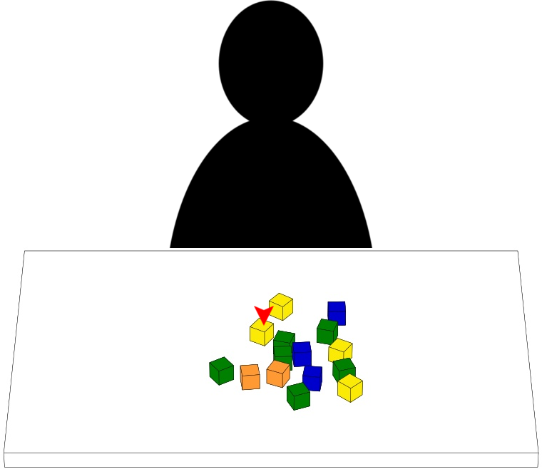
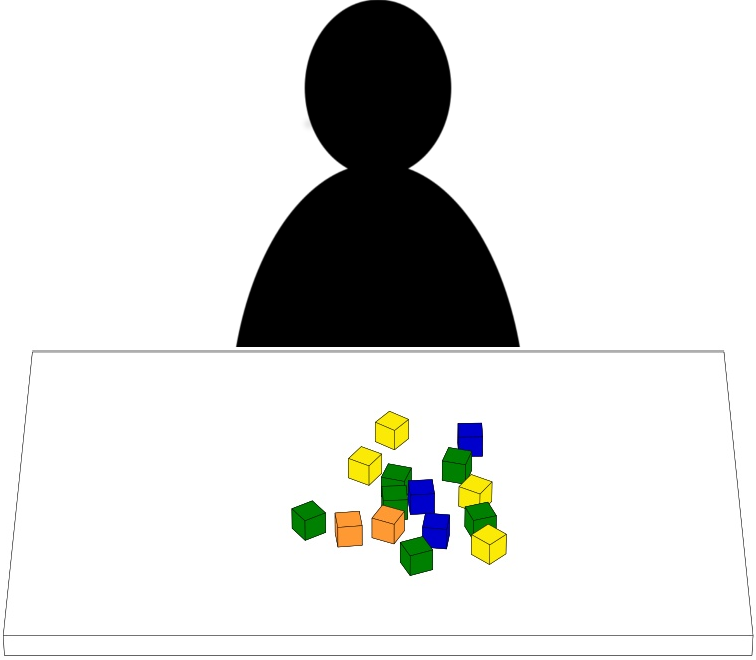
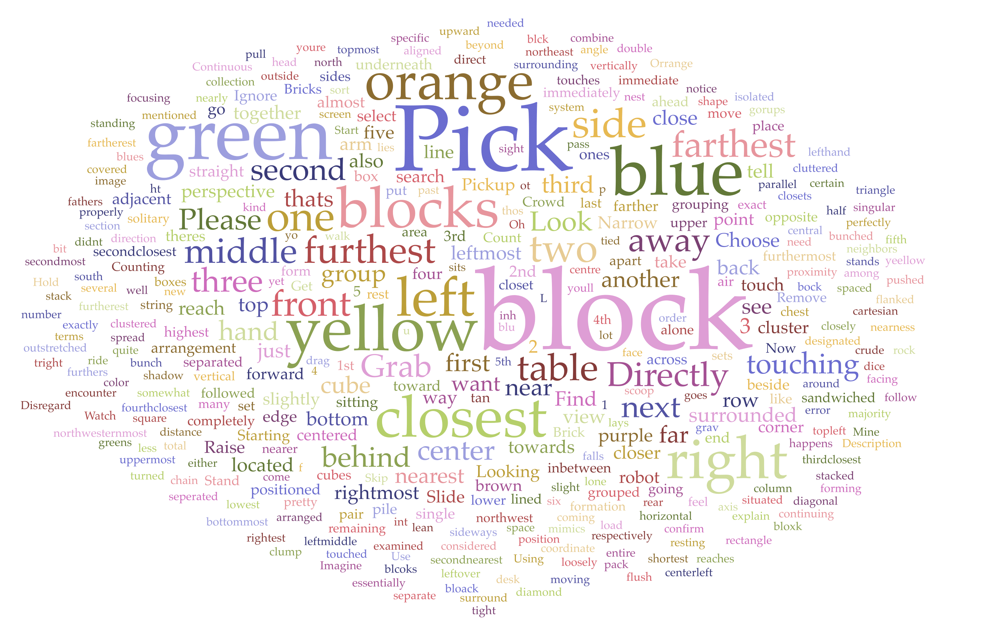

Introduction
This web page supports a dataset of natural language instructions for object specification in manipulation scenarios. It is comprised of 1582 individual written instructions which were collected via online crowdsourcing. This dataset is particularly useful for researchers who work in natural language processing, human-robot interaction, and robotic tabletop manipulation. In addition to serving as a rich corpus of domain specific language, it provides a benchmark of image/instruction pairs to be used in system evaluations as well as uncovers inherent challenges in tabletop object specification.
Referred Journal Publication
R. Scalise*, S. Li*, H. Admoni, S. Rosenthal, and S. Srinivasa "Natural Language Instructions for Human-Robot Collaborative Manipulation", International Journal of Robotics Research, in press.
Data and accessing code
-
Primary Dataset: Natural Language Instructions Corpus
-
(We downsampled the data from 1582 to 1400 and use the 1400 instructions in the evaluation study)
Data example
Description or Instruction: The participant gave it to describe the indicated block
Index: This is the No. 1341 description
Scenario: In study 1, we show people either Configuration_01_v1.png or Configuration_01_v2.png. Here it is Configuration_01_v1.png, which you can access at Configuration_01_v1.png
AgentType: The participant is instructing a human instead of a robot
Difficulty: The participant rated this scenario as 5 (most difficult)
TimeToComplete: The participant spent 16 seconds to generate this description
Description Index Scenario Pick up the yellow cube. 1341 Configuration_1_v1.png AgentType Difficulty TimeToComplete ... human 5 0:00:16 ... -
Supplementary Dataset: Instruction Evaluation
- Note: in accessing code of study 2,
r_target_block_indexis referring to the index of the target block. The index of all the blocks and the indices of target blocks in both versions of each scenario on the tabletop are annotated in images_code.pdf Description or Instruction: The participant looked for the indicated block based on this instruction
Index: This is the No. 1341 description
Scenario: In study 2, we don't distinguish Configuration_01_v1.png or Configuration_01_v2.png. So you can access this image at Configuration_01.png
NumOfWords: Number of words within this instruction
TargetBlockId: You can find out the target block by referring to images_code.pdf Page 1. You can find the block indicated by '1'
ClickedBlockId: You can find out the block selected by the participant by referring to images_code.pdf Page 1. You can find the block indicated by '1'
Correctness: The participant successfully select the target block (1 if right, 0 if wrong)
TimeToComplete: The participant spent 3.593606 seconds to generate this description
Instruction Index Scenario NumOfWords TargetBlockId ClickedBlockId Correctness TimeToComplete ... Pick up the yellow cube. 1341 Configuration_1_v1.png 5 1 1 1 3.593606 ...
Stimulus Images
-
The stimulus images used in Study 1
"Configuration_example_page.png" is specifically used in the example page of the online Mechanical Turk study.
Images from "Configuration_01_**.png" to "Configuration_14_**.png" are the images used as actual stimuli. From each of the 14 configurations, there are 2 possible target blocks selected which are indicated by a red arrow ("Configuration_**_v1.png" and "Configuration_**_v2.png"). In total, there are 28 unique scenarios in the set of stimulus.
-
An example

-
The stimulus images used in Study 2
It contains 1 image specifically used in the example page and 14 different images as the actual stimuli.
-
An example

Publications based on this dataset
-
Conference Papers
Shen Li*, Rosario Scalise*, Henny Admoni, Stephanie Rosenthal, and Siddhartha S Srinivasa. Spatial references and perspective in natural language instructions for collaborative manipulation. In Proceedings of the International Symposium on Robot and Human Interactive Communication Conference. IEEE, 2016.
-
Workshop Papers
Shen Li*, Rosario Scalise*, Henny Admoni, Stephanie Rosenthal, and Siddhartha S Srinivasa. Perspective in Natural Language Instructions for Collaborative Manipulation. In Proceedings of the Robotics: Science and Systems Workshop on Model Learning for Human-Robot Communication. 2016.
-
Posters
Workshop at Robotics: Science and Systems 2016 - Model Learning for Human-Robot Communication
Contact
If you have any questions about the dataset, or intend to collaborate with us on human-robot communication, please contact us! We are open and excited to collaborate!
You can reach either of us via email:
Rosario Scalise rscalise@andrew.cmu.edu
Shen Li shenli@cmu.edu
License
Source code is provided under the MIT License and the .csv data is available under a CC BY-SA 4.0 license.
